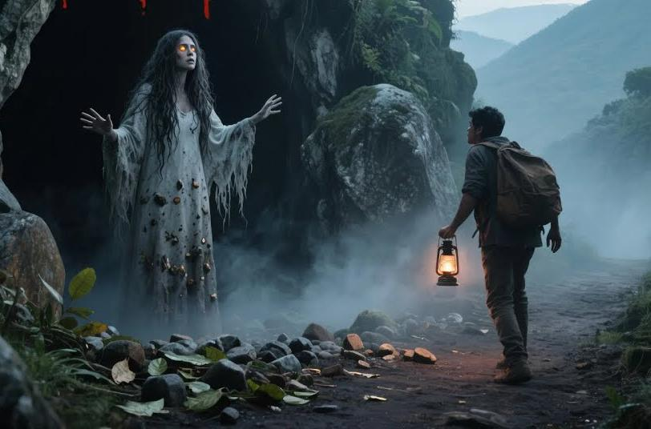

La Mocuana

La Mocuana es una de las leyendas más famosas de Nicaragua. Cuenta la historia de una joven indígena, hija de un poderoso cacique, que custodiaba tesoros escondidos en cuevas secretas. Un conquistador español llegó a la región y la enamoró con engaños, solo para descubrir la ubicación de las riquezas. La joven, confiada, le mostró los caminos ocultos y los secretos de su pueblo.
Cuando el hombre obtuvo lo que quería, la traicionó y la dejó atrapada dentro de una cueva oscura para que nadie más conociera el secreto. Algunas versiones dicen que ella murió allí de hambre y tristeza; otras afirman que logró escapar, pero perdió la razón para siempre. Desde entonces, su espíritu vaga por montañas y caminos rurales como una mujer de cabello larguísimo que cubre su rostro.
Los viajeros que se dejan atraer por su figura terminan perdidos entre barrancos y cuevas profundas. Hay quienes aseguran que cuando ella decide mostrarse, su rostro aparece vacío o desfigurado por el dolor de la traición. Para muchos, la Mocuana representa el sufrimiento y el engaño vivido por los pueblos indígenas durante la época de la conquista.